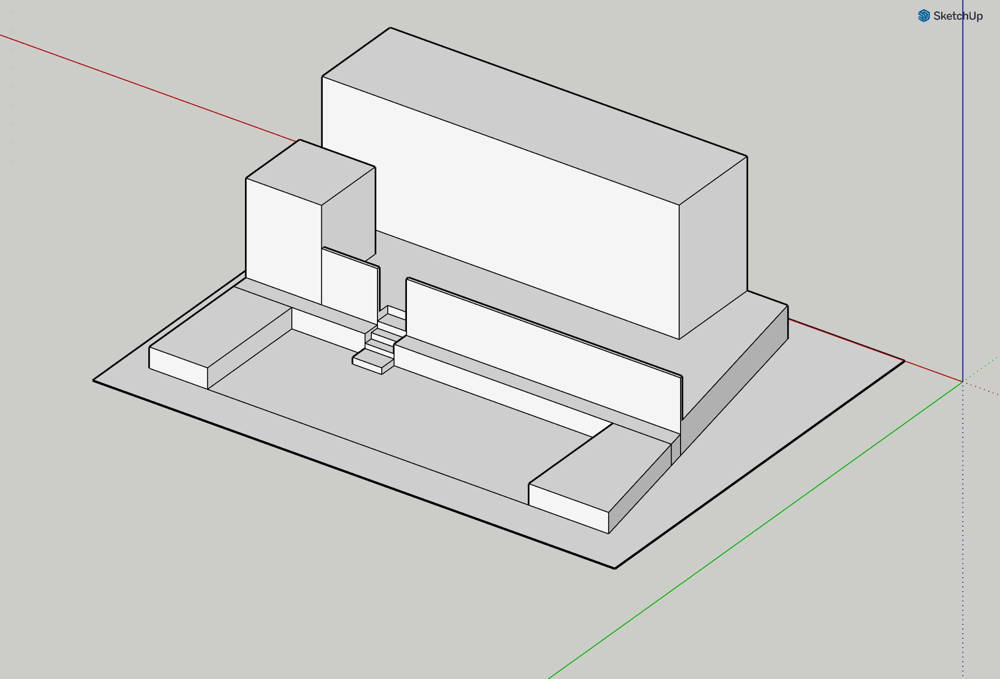
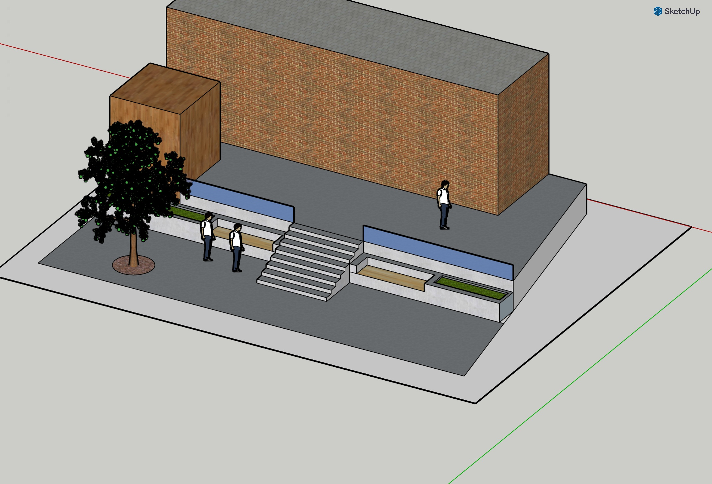
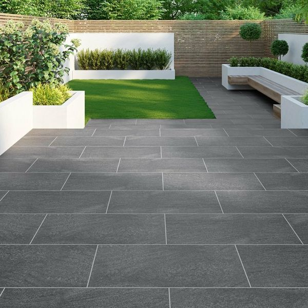
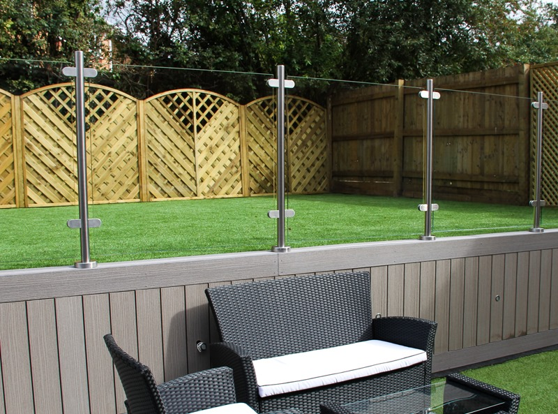
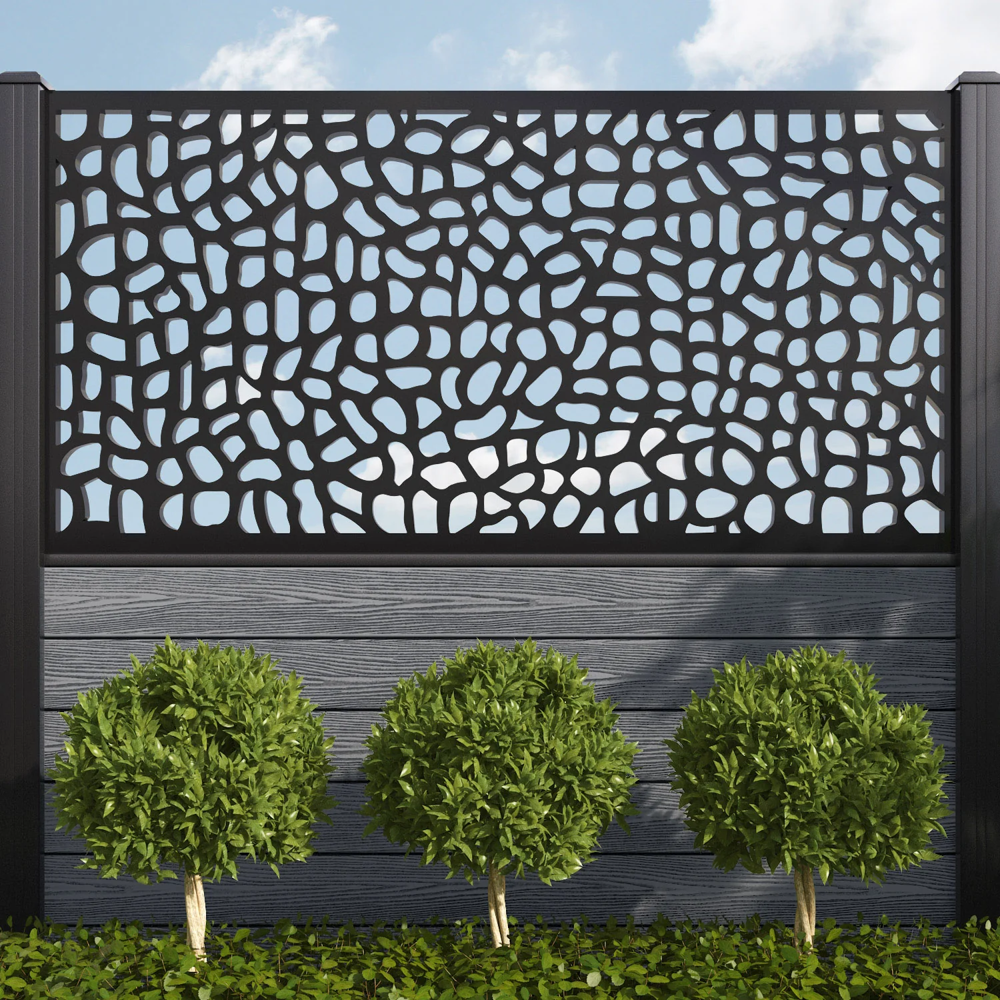
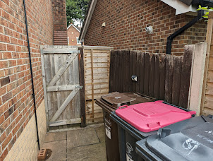

The plan is to go from this
To this:
Where the changes are:
- New tiles on both levels (the dark grey in the image)
- New steps
- More central
- Shallower
- Tiled to match
- Better retaining wall
- Rendered (all the white areas in the image)
- Painted white
- A seating area built in to the walls (wood texture in image)
- Some smaller flower beds in the either side of the seating area built in (green leaf texture in image)
- Removing the flower beds on the side
- Although happy to keep them if that's easier, just rendering the wall to match new design
- A new smaller modern looking fence between the two levels
- Keep the existing large apple tree if possible
- New shed with tiles under the shed
- New wider gate at the side
Examples:
 These sorts of tiles, wall design, that bench area is nice, but not exactly as I imagined, the little flower beds built into the wall look nice.
Example of the type of diving fence I had in mind:
The widened gate I want is due to this issue, the existing gate looks like this:
This is too narrow to get a bike through and the fence at the side (orthogonal to the gate) is a non-standard length
We would like the fence to be shortened to be a standard length and the gate to be replaced with a wider gate
Existing Garden Images